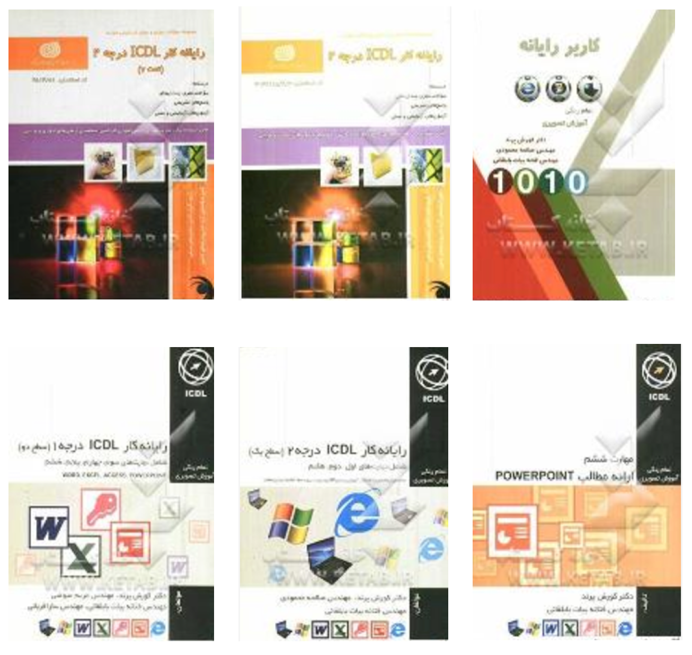
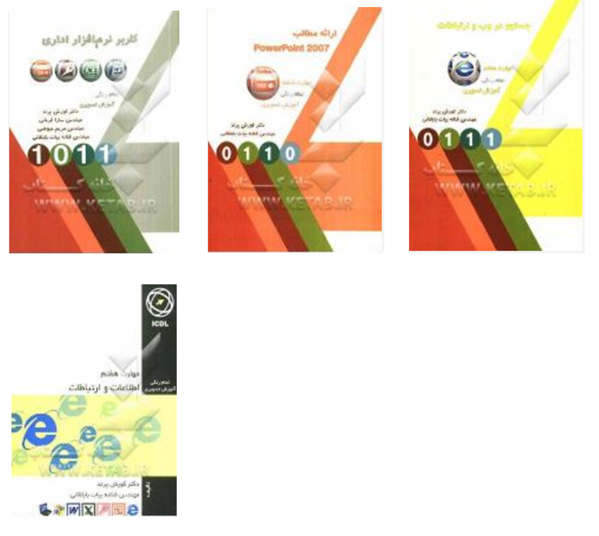

|
ICDL is the world's leading computer skills certification. It is including base, intermediate, and advanced modules which are computer essentials, online essentials, word processing, spreadsheets, presentation, using databases, online collaboration, IT security, project planning, and digital marketing. I used my knowledge in Computer Science by co-authoring series of ten books in ICDL skills for nationwide "Technical & Vocational High Schools" in Iran. Here is the list of published books:   |